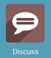
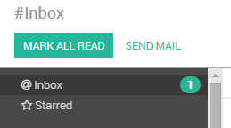
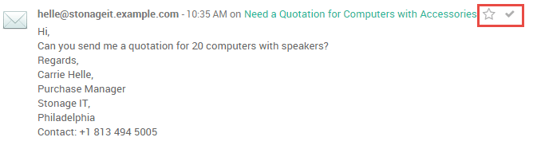
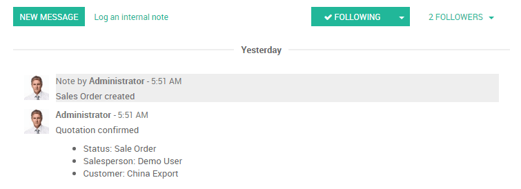
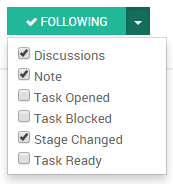

Overview
YuanCloud Discuss is an easy to use messaging app for teams that brings all your organization's communication into one place and seamlessly integrates with the YuanCloud platform. Discuss lets you send and receive messages from wherever you are in YuanCloud as well as manage your messages and notifications easily from within the app. Discuss allows you to create channels for team chats, conversations about projects, meeting coordination, and more in one simple and searchable interface.
Communicating with Your Team Using Channels
You can use channels to organize discussions between individual teams, departments, projects, or any other group that requires regular communication. By having conversations that everyone in the channel can see, it's easy to keep the whole team in the loop with the latest developments.
Creating a Channel
In Discuss there are two types of channels - public and private.
A public channel can only be created by an administrator with write privileges and can be seen by everyone in the organization. By contrast, a private channel can be created by any user and by default is only visible to users who have been invited to this channel.
注解
A public channel is best used when many employees need to access information (such as interdepartmental communication or company announcements), whereas a private channel should be used whenever information should be limited to specific users/employees (such as department specific or sensitive information).
Configuring a Channel
You can configure a channel's name, description, access rights, automatic subscription, and emailing from . Changing channel access rights allows you to control which groups can view each channel. You can make a channel visible by all users, invited users, or users within a selected user group. Note that allowing "Everyone" to follow a private channel will let other users view and join it as they would a public channel.

How To Set Up a Mailing List
A channel can be configured to behave as a mailing list. From within , define the email you would like to use. Users can then post to the channel and choose to receive notifications using the defined email address. An envelope icon will appear next to the channel name in the list to indicate that a channel will send messages by email.
Locating a Channel
If you do not see a channel on your dashboard, you can search the list of public channels to locate the correct channel or create a new channel by clicking the plus icon.

You can also click the CHANNELS heading to browse a list of all public channels. This allows the user to manually join and leave public channels from a single screen.
注解
It is always wise to search for a channel before creating a new one to ensure that duplicate entries are not created for the same topic.
Monitoring Your Messages Using the Inbox
Use the inbox to monitor updates and progress on everything you do in YuanCloud. Notifications from everything you follow and conversations in which you are mentioned appear in your inbox.
Marking an item with a check sets the message to read and removes it from your inbox. If you would like to save an item for future reference or action, mark it with a star to add it to the Starred box. You can star any message or notification in Discuss or any of the item-specific chatters throughout YuanCloud to keep tabs on it here.
Sending Emails
You can send emails from the inbox of YuanCloud Discuss. In addition to the usual email features, you can select a template that you have already created, or create one on the fly and save it for later use.
Grabbing Attention with Direct Messages and Mentions
You can mention a user in a channel or chatter by typing @user-name. Mentioning a user in the chatter will set them as a follower of the item (if they are not already) and send a message to their inbox. The item containing the mention will also be bolded in the list view. Mentioning a user in a channel will send a message to their inbox. You cannot mention a user in a channel who is not subscribed to the channel. Typing #channel-name will provide a link to the mentioned channel in either a chatter or another channel.
Direct Messaging a User
Direct messages are private messages viewable only by the sender and recipient. You can send direct messages to other users from within the Discuss module by creating a new conversation or selecting an existing one from the sidebar. Direct messages can be sent from anywhere in YuanCloud using the speech bubble icon in the top bar. The online status of other users is displayed to the left of their name. A green dot indicates that a user is Online, an orange dot that they are Idle, and a grey dot that they are offline.
Desktop Notifications from Discuss
You can choose to see desktop notifications when you receive a new direct message. The notification shows you the sender and a brief preview of the message contents. These can be configured or disabled by clicking on the gear icon in the corner of the notification..

Tracking Important Topics, Projects, and Conversations
You can keep track of virtually any object in YuanCloud, such as a Task or Quotation, by following it. An item can be followed from the item view, just above the chatter.
You can choose which types of events to follow, with the depending on the type of item. The example below shows the options available when following a task in the Projects Module.
You can invite other users and add channels as followers. Adding a channel as a follower will send messages posted in the chatter to the channel with a link back to the original document.